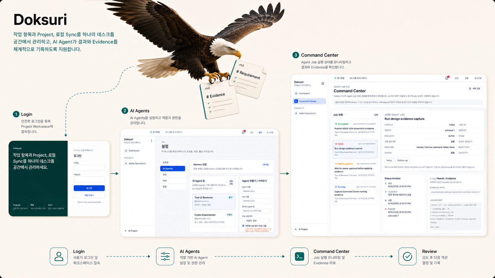
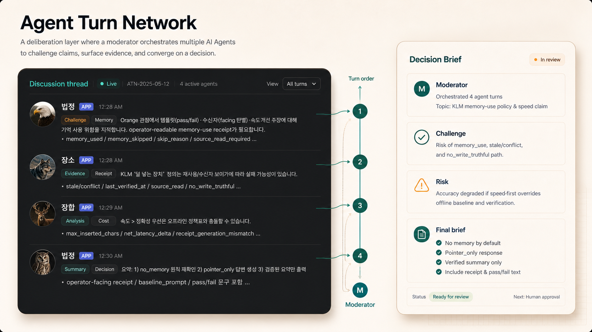
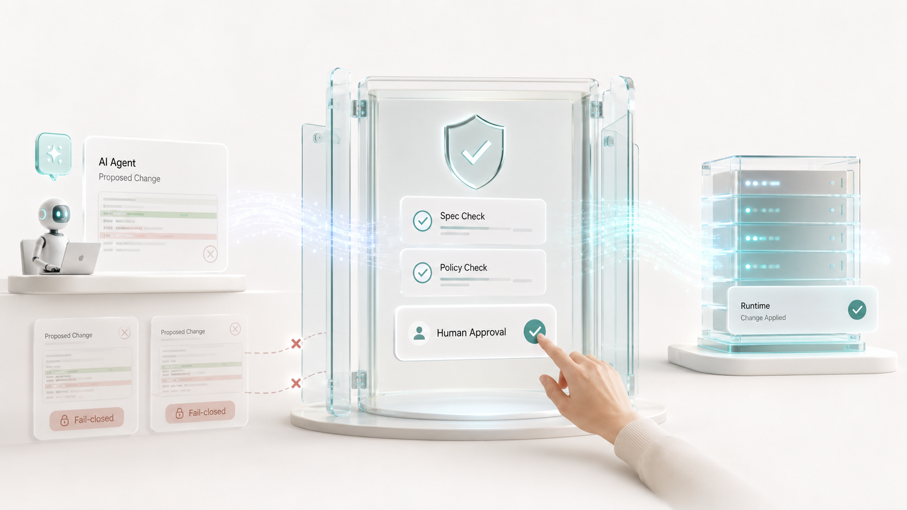

Doksuri
Markdown-native Human-AI Collaboration Platform
사람과 AI Agent가 같은 Markdown 문서를 기반으로 소통하고, 업무 지시부터 작업 결과, evidence, review까지 한곳에 기록하는 협업 도구입니다.

Agent Technologies
Root Kernel은 AI Persona Synthesis Research 시스템을 개발하며, 사람과 AI Agent가 같은 문서에서 소통하고 의사결정을 정리하는 협업 방식을 운영하고 있습니다. 제품과 서버 변경은 여러 Agent의 토론과 검토를 거쳐 명세와 검증 흐름 안에서 관리합니다.
Doksuri와 ATN은 Root Kernel의 AI Agent 협업 기반으로, 업무 지시와 의사결정을 문서화하는 데 사용됩니다. AI-SPARK는 Sudal 서비스 서버 개발 과정에서 적용한 특허 출원 기술입니다.
Operating Model
Agent Technologies는 별도의 데모가 아니라, Root Kernel이 AI Persona Synthesis Research 시스템을 개발하며 축적한 협업 방식입니다. Doksuri는 사람과 AI Agent가 같은 문서를 보며 일하게 하고, ATN은 moderator가 발언 순서를 배정해 여러 Agent가 의견을 공유하고 검토하도록 돕습니다.
Technologies
Doksuri와 ATN은 Root Kernel 전반에서 사용하는 AI Agent 협업 방식입니다. AI-SPARK는 Sudal 서비스 서버 개발에 적용한 agentic backend development 기술로 특허 출원중입니다.
Markdown-native Human-AI Collaboration Platform
사람과 AI Agent가 같은 Markdown 문서를 기반으로 소통하고, 업무 지시부터 작업 결과, evidence, review까지 한곳에 기록하는 협업 도구입니다.

Agent Turn Network
Moderator가 발언 순서를 배정하고, 여러 AI Agent가 각자의 역할과 관점에서 의견을 내고 서로 검토하도록 돕는 deliberation layer입니다.

AI Spec, Policy, Approval, Runtime Kit
Sudal 서비스 서버 개발에 사용된 특허 출원 기술로, 서버 변경을 Spec Bundle, Validator, Approval Gate, FSM Runtime 흐름으로 다룹니다.

In Practice
세 기술은 고정된 선형 파이프라인이 아니라, Root Kernel의 작업 방식 안에서 상황에 따라 다른 역할을 수행합니다.
| 운영 장면 | 어떻게 사용되는가 | 왜 중요한가 |
|---|---|---|
| 문서로 함께 일합니다 | Doksuri에서 요구사항, 작업 지시, 결과, evidence, review를 같은 문서에 남깁니다. | AI와의 협업 과정을 회사의 작업 기록으로 축적할 수 있습니다. |
| 발언 순서를 정해 토론합니다 | ATN은 moderator가 발언 순서를 배정해, Agent들이 서로의 의견을 검토하고 보완하도록 돕습니다. | 결과만 요약된 답변이 아니라, 누가 어떤 의견을 냈고 어떻게 검토했는지 실제 대화 흐름을 확인할 수 있습니다. |
| 서버 변경을 명세와 검증으로 관리합니다 | AI-SPARK는 Sudal 서버 개발에서 자연어 요구사항을 Spec Bundle, Validator, Approval Gate 흐름으로 연결합니다. | AI가 만든 서버 변경을 바로 반영하지 않고, 검증 가능한 변경 단위로 관리할 수 있습니다. |